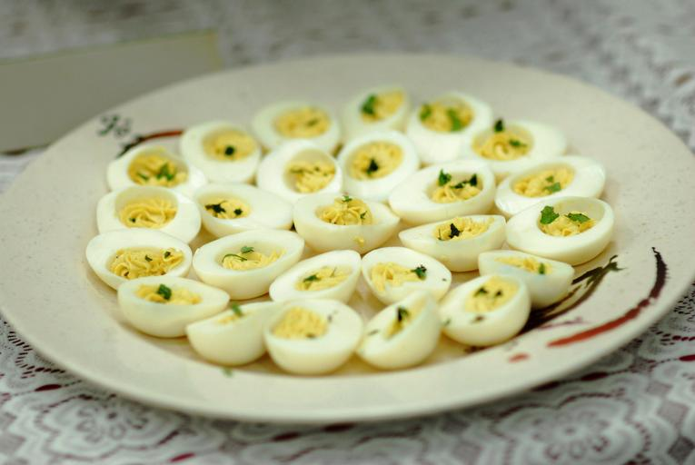

Home
Deviled Eggs

Delicious Deviled egg recipe.
You don't have to wait until the holidays. You can enjoy deviled eggs after making this recipe. Is it good?
Probably, if you like such things, it will be.
Ingredients
- 12 large hard-boiled eggs, peeled
- 1/3 cup mayonnaise
- 1 tablespoon dill pickle relish
- 1 teaspoon dijon mustard
- 1 teaspoon pickle juice
- 1/2 teaspoon salt
- 1/4 teaspoon black pepper, ground
- 1 teaspoon paprika, ground
Directions
- Slice eggs in half lenghwise
- Remove the yolks from the eggs and place in a medium bowl.
- Mash the yolks with a fork.
- Add mayo, relish dijon, pickle juice, salt, and pepper to the smashed yolks; then stir.
- Transfer to a large zip-type plastic bag or icing tube with a larger tip.
- Place the egg whites neatly on a tray or plate.
- If a plastic bag was used, cut off one of the lower corners. Fill
the egg whites with about 1 1/2 to 2 teaspoons of filling.
- Sprinkle moderately with paprika.
- Serve, or place in the fridge to chill and serve later. Good either way.